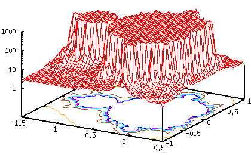
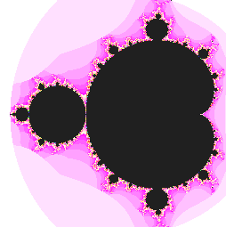
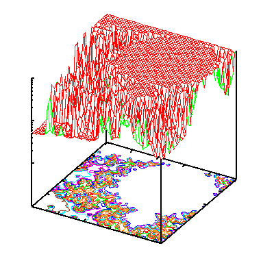
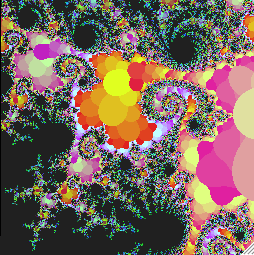
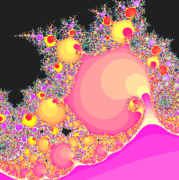
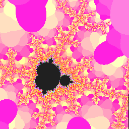
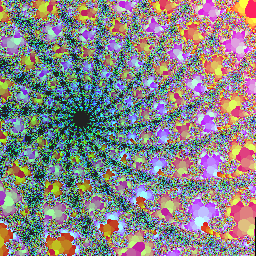

<!DOCTYPE HTML PUBLIC "-//W3C//DTD HTML 4.01 Transitional//EN">
<html lang="ja">
<head>
<title> gnuplot / fractal / mandelbrot </title>
<!-- Generated 2002/4/15 -->
<!-- $Id: mandelbrot.html,v 1.6 2004/12/04 10:01:51 kawano Exp $ -->
<meta http-equiv="content-type" content="text/html;charset=iso-2022-jp">
<link rel="stylesheet" href="../style-new.css" type="text/css">
</head>
<body>

<table width="100%" border="0" cellpadding="0" cellspacing="0">
<tr><td bgcolor="#cccc90" width="320">
    <div align="left">
    <a href="../index.html">
    
    </a></div></td>
    <td bgcolor="#cccc90">
      <div align="center"><h3> - not so Frequently Asked Questions - </h3> </div>
      <div class="update"> update 2004/11/29 </div>
    </td>
</tr>
<tr><td bgcolor="#fae8ba"></td>
    <td bgcolor="#fae8ba"><div class="navi"> 
<a href="../index.html">          HOME </a> |
<a href="../intro/index.html">    INTRODUCTION </a> |
<a href="../general.html">        INFORMATION </a> |
<a href="../gallery/index.html">  GALLERY </a> |
<a href="mandelbrot-e.html">      ENGLISH </a>
</div></td></tr>
</table>
<hr class="topsep">


<table width="100%" border="0" cellpadding="0" cellspacing="0">
<tr><td id="menu">
 <p> <a href="index.html">   $B%U%i%/%?%k(B  </a></p>

 <ul>
  <li><a href="recursive.html">  $B4X?t$N:F5"Dj5A(B </a>
  <li><a href="mandelbrot.html"> Mandelbrot$B=89g(B </a>
  <li><a href="selfsq.html">     Julia$B=89g(B ($B<+8JJ?J}%U%i%/%?%k(B) </a>
 </ul>
</td>

<td id="content">


<h1><a name="top"> Mandelbrot$B=89g(B </a></h1>

<p> $B$"$kJ#AG?t(B A $B$KBP$7$F!$<!$N$h$&$JA22=<0$r7W;;$7$^$9!%(Bn$B$,L58B$KBg$-$/$J$C$F$b(B
|z(n)|^2 $B$,H/;6$7$J$$$h$&$JJ#AG?t(BA$B$N=89g$r(BMandelbrot$B=89g$H8F$S$^$9!%(B</p>

<pre class="file">
    z(0)   = 0.0
    z(n+1) = z(n)*z(n) + A
</pre>

<p> $BJ#AGJ?LL$r(BXY$BJ?LL$H$7!$$3$N>e$K(BA$B$r$H$j$^$9!%(Bz(n)$B$,H/;6$r;O$a$k(Bn$B$NCM(B
$B$r(BZ$B:BI8$H$7$F%W%m%C%H$9$l$P(BMandelbrot$B=89g$N(B3$B<!85I=<($,$G$-$^$9!%:G=i$K(B
$B>e$NA22=<0$r:F5"$r;H$C$FDj5A$7$^$9!%$3$l$O!$(Bn$B$r%<%m$+$iA}2C$5$;$F$$$-!$(B
|z|^2$B$,$"$k?tCM(B($B$3$3$G$O(B2$B$H$7$F$$$^$9(B)$B$r1[$($?$i$=$N;~$N(Bn$B$rJV$9$h$&$J(B
$B4X?t$G$9!%J#AG?t(BA$B$K$h$C$F$OH?I|2s?t$,Hs>o$KBg$-$/$J$j$^$9$N$G!$$H$j$"(B
$B$($:(Bn$B$N:GBgCM$r(B1000$B$H$7$F$*$-$^$9!%(B</p>

<p> $B$J$*(Bgnuplot$B$G$O!$(B<tt>a</tt>$B$r<BIt(B<tt>b</tt>$B$r5uIt$H$9$kJ#AG?t(Bz$B$O(B
<tt>z={a,b}</tt>$B$HI=5-$7$^$9!%J#AG?t$+$i<BIt!&5uIt$r<h$j=P$9$K$O!$4X?t(B
<tt>real(z), imag(z)</tt> $B$r;H$$$^$9!%$^$?!$(B<tt>abs(z)</tt>$B$G(Bz$B$N@dBPCM(B
$B$,5a$^$j$^$9!%5U$K<B?t$+$iJ#AG?t$r:n$kJ}K!$OL5$$$N$G!$(B
<tt> complex(x,y)=x*{1,0}+y*{0,1}</tt>$B$N$h$&$K4X?t$rDj5A$7$^$9!%(B</p>

<pre class="sample">
complex(x,y) = x*{1,0}+y*{0,1}
mandel(x,y,z,n) = (abs(z)&gt;2.0 || n&gt;=1000) ? \
                  n : mandel(x,y,z*z+complex(x,y),n+1)
</pre>

<p> x,y$B$OJ#AGJ?LL$G$N:BI8$G!$J#AG?t(BA$B$rI=$7$^$9!%(Bz$B$K$OA22=<0(Bz^2+A$B$,F~$j!$(B
n$B$r(B0$B$+$i:GBg(B1000$B$^$GJQ2=$5$;$?$H$-(Babs(z)$B$,(B2.0$B$r1[$($?;~$N(Bn$B$NCM$,4X?t$NCM(B
$B$H$7$FJV$5$l$^$9!%$3$N4X?t$r8F$V$K$O!$(Bx,y $B:BI8$NB>$K!$(Bz$B$N=i4|CM(B{0,0}$B$H(B
n$B$N=i4|CM(B0$B$,I,MW$G$9!%(Bx$B$H(By$B$NHO0O$rE,Ev$KM?$($?$H$-$NI=<(7k2L$O<!$N$h$&(B
$B$K$J$j$^$9!%(B</p>

<pre class="sample">
gnuplot&gt; set xrange [-1.5:0.5]
gnuplot&gt; set yrange [-1:1]
gnuplot&gt; set logscale z
gnuplot&gt; set isosample 50
gnuplot&gt; set hidden3d
gnuplot&gt; set contour
gnuplot&gt; splot mandel(x,y,{0,0},0) notitle
</pre>

<div align="center">

</div>




<p> $BIaDL(BMandelbrot$B=89g$r(BCG$B$GI=<($9$k$H$-$O!$2hA|$N3F%T%/%;%k$rJ#AGJ?LL(B
$B$K3d$jEv$F$F$*$-!$$=$N%T%/%;%k$KBP$7$FA22=<0$r7W;;$7$^$9!%7W;;CM$,H/;6(B
$B$7$?$i$=$NH?I|2s?t(BN$B$K1~$8$?%+%i!<$r$=$N%T%/%;%k$KI=<($7$^$9!%4JC1$J(BX
Window$B$N(B<a href="xmandelbrot.c">$B%W%m%0%i%`(B</a>$B$G:n@.$7$?(B2$B<!85J?LL$G(B
$B$N(BMandelbrot$B=89g$O1&$N$h$&$J$b$N$G$9!%>e$N?^$NBfCO$NItJ,$,1&$N?^$G$O(B
$B9u$KEI$i$l$F$$$kItJ,$KBP1~$7$^$9!%(B</p>
<br clear="all">




<p> $B:8$N?^$N$h$&$K!$(BMandelbrot$B=89g$N0lIt$r3HBg$9$k$HHs>o$KJ#;($J9=B$$r(B
$B8+$k$3$H$,$G$-$^$9!%$3$3$G$O$+$J$j:Y$+$JEy9b@~$rIA$$$F%U%i%/%?%k$i$7$5(B
$B$rI=8=$7$F8+$^$7$?$,!$(Bgnuplot$B$N$h$&$J@~2h$G$O$3$l$/$i$$$,8B3&$G!$(BCG$B$G(B
$BM7$V$K$O$d$O$j$A$g$C$HL5M}$N$h$&$G$9!%?7$7$$(Bgnuplot ver.3.8/4.0$B$G$O(B3$B<!85$G(B
$B$N%+%i!<I=<($,6/2=$5$l$F$$$^$9!$$=$l$r;H$&$H(B
<a href="http://ayapin.film.s.dendai.ac.jp/~matuda/Gnuplot/pm3d.html">
$B$b$C$He:No$J$b$N(B</a>$B$,IA$1$^$9!%(B
</p>

<br clear="all">

<div class="top"><a href="mandelbrot.html#top"></a></div>

<p> $B$3$3$G$O%*%^%1$H$7$F!$(BX Window$B$G:n$C$?(BMandelbrot$B=89g$N(BCG$B$r$*8+$;$7(B
$B$^$9!%A22=<0$NH?I|2s?t$K1~$8$F(BRGB$B$rE,Ev$K3d$jEv$F$k$3$H$Ge:No$J3($rIA(B
$B$/$3$H$,$G$-$^$9!%(B</p>

<div align="center">


</div>
<br>

<div align="center">


</div>

<div class="top"><a href="mandelbrot.html#top"></a></div>

</td>
</tr></table>
<hr class="topsep">

</body>
</html>
